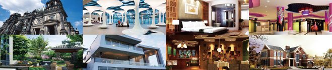

培养目标
通过本专业的课程教学，学生应有观察、理解、总结生活的能力；对不同人群的 生活方式、消费方式、审美的差异化有自己的评判标准和应对策略。通过大量的 项目实践得到完整的解决实际问题，参与设计完整的建筑、规划、室内等方面的 项目工程。自如运用所学知识从事建筑、城市规划、景观设计、园林设计、室内 设计等领域的工作能力。
就业回报
由于环艺设计专业的行业特殊性，底薪+项目提成的工资组合，更能够通过自己 的努力和勤奋，实现自我的肯定。在北京大量项目经验的积累之后，环艺专业的 学生也更容易过渡到自主创业阶段。在历届的就业学生中，工作第一年底薪+提 成超过10000元/月的同学大有人在；往届优秀学员中已经有不少学生开始自主 创业。
核心课程
世界建筑风格、室内设计风格三十五种解析、世界流行色协会流行趋势解读、照 明设计、软装设计商业空间设计、别墅设计、庭院景观设计；北京咖啡馆项目实 地考察与项目模拟、北京五星级酒店项目考察与项目模拟、北京办公空间项目考 察与项目模拟、北京商场考察与项目模拟、北京餐饮项目考察与项目模拟。
就业岗位
软装搭配设计师、照明设计师、商业店铺设计师、办公空间设计师、别墅设计师、 室内设计师、方案深化师、效果图表现等。